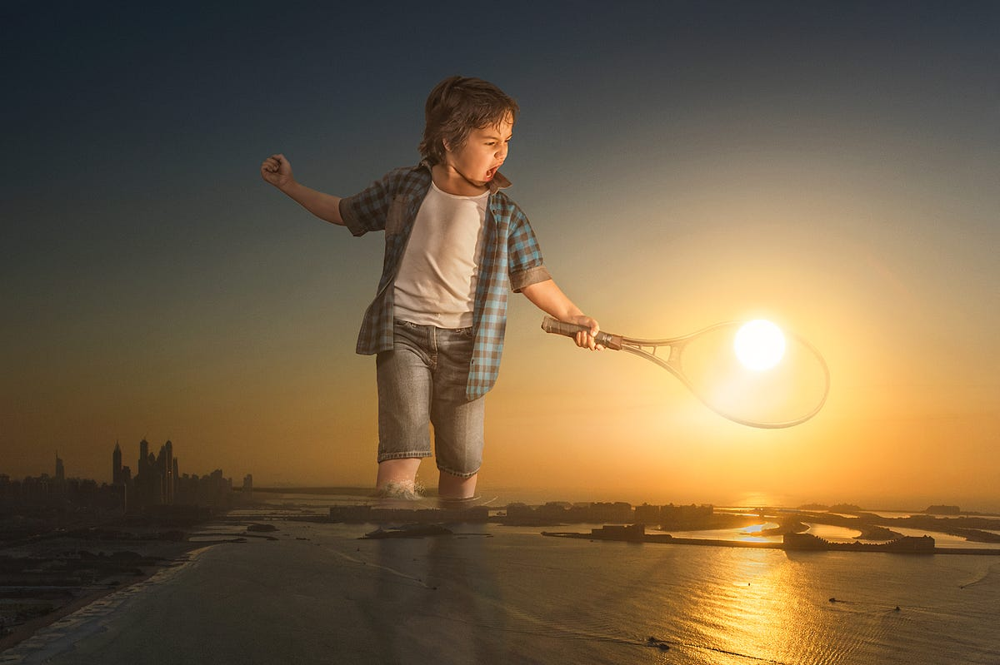

|
Step 1: Intro
| Step 2:
Selecting | Step
3: Guy in City |
Step 4: Making
Adjustments | Step
5: Shadow |
Exercise |
| Creating a Giant Exercise: Custom Giant |
To wrap up this lesson, you will each create a unique image where you are the giant. You can create any kind of image you like, just as long as your finished product looks realistic.
Follow the directions below to create your image:
Some things to keep in mind when selecting a background image:
I want to give a quick word of warning here. When selecting your image, think carefully before going with a picture where you are going to place yourself in water. Consider the following image...
Notice that while the color and lighting of the girl matches the background and she does have a shadow, that the lack of ripples in the water where she is standing make it obvious that she was added in. Now look at these two images...
Notice how adding ripples in the water around the girl and the giraffe's mouth make it much more believable that they are actually in contact with the water. Also notice that both the girl and the giraffe are reflected in the water. Realistic reflections in water can be difficult to pull off, and are beyond the scope of this tutorial, so don't worry about adding in a reflection. If you want to place yourself in water then go for it, just make sure to add some ripples in the water (this is easily done with the Brush Tool with a gray color and drawing in the lines - they don't have to be perfect, just visible).
If you want to make your image as realistic as possible and add in a water reflection, then you can do so for extra credit. There are tons of great video tutorials online - most of which are less than 10 minutes long - that will show you how to create a water reflection in both Photopea and Photoshop. If you decide to do this, make sure that you have time to complete it before the due date. Remember that to get EXTRA credit you must first have CREDIT, so make sure that adding in the reflection is the last thing you do. You need to be sure that you have completed all of the required work before you start adding in extras.
Once your image is saved, you need to take a picture of yourself to include in the image as a giant. Here are a few important things to keep in mind as you plan your selfie:
Your giant needs to look natural in your background. Consider the following images...

Note how the pose makes the image work
The original photo is of a wreck in New York taken out of a the window of a
building, so adding in the cat playing with a car fits nicely
The texture of the dog's coat appears similar to the background
She is bouncing a basketball.....on a basketball court.....so.....yeah.....but
also notice that they guys on the court are looking up at her (they are actually
looking at the ball bouncing around on the rim, but she is covering that up)
Notice how the giant in each of the above images fits with what is going on around them. This is what you want to shoot for.
Be careful when making your selection because hair can be an issue. Look at following images...
Notice that in both images the hair (and fur) has a very sharp edge and does not look realistic. Remember that we didn't really have this issue when we selected the guy pushing the car in Step 1 because his hair was cut very close to his head (yeah, I did that on purpose). If you have lots of hair that is difficult to select, consider retaking your picture with your hair slicked down or pulled back, or wearing a hat (refer back to the two ladies in Step 1). Keep in mind that it is far easier to just take a new picture then to take a long time to try and make complicated hair look right.
Keep in mind that your goal for this exercise is
to create an image with you as the giant THAT LOOKS REALISTIC. Try your best to make the final result look as realistic as possible - this is what you will be graded on. If it is easy to tell that you don't belong in the image you will lose points. For example, look at this image...Note that while she has a shadow (on the bridge directly under her) and a reflection in the water, there are no ripples around her legs and her brightness, tone, and color do not match the background, and thus she doesn't really fit into the scene. If you turn in something like this, it would be bad.
Take your time and do a good job.|
Step 1: Intro
| Step 2:
Selecting | Step
3: Guy in City |
Step 4: Making
Adjustments | Step
5: Shadow |
Exercise |